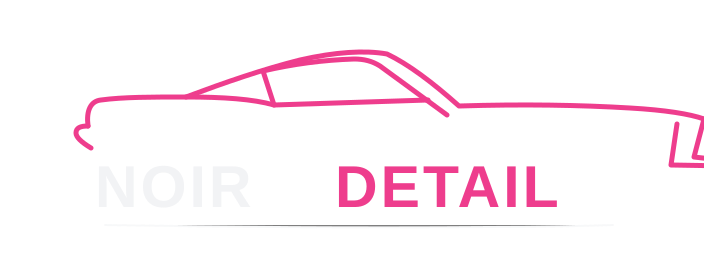

Estrutura o conteúdo e a base semântica das páginas web.
Front-End Development / UI Design / Multimédia
Olá, sou o David.
Front-end developer e UI designer com background em Engenharia de Multimédia.
Gosto de transformar ideias em interfaces claras, modernas e fáceis de usar, com atenção al detalhe visual e à experiência do utilizador.

Disponível para projetos criativos
Web / UI / Multimedia
Sobre mim
Perfil criativo e técnico
Sou o David Lopes, front-end developer e UI designer com formação em Engenharia de Multimédia. Gosto de criar experiências digitais claras, modernas e funcionais, juntando design visual, interação, desenvolvimento web e multimédia. Procuro projetos onde possa transformar ideias em interfaces bem estruturadas, acessíveis e fáceis de usar.
Stack
Skill Set
Ferramentas e áreas que uso para desenhar interfaces, desenvolver experiências web e criar conteúdos multimédia.
Define estilos, layouts responsivos, animações e identidade visual.
Adiciona interação, lógica e comportamento dinâmico às interfaces.
Superset de JavaScript que adiciona tipagem estática e segurança ao código.
Framework para aplicações web estruturadas, escaláveis e reativas.
Biblioteca para construir interfaces por componentes reutilizáveis.
Ambiente JavaScript para criar servidores, APIs e ferramentas web.
Linguagem orientada a objetos para lógica, apps e bases sólidas de programação.
Linguagem server-side usada para sites dinâmicos e integração com bases de dados.
Consulta, organiza e relaciona dados em bases de dados relacionais.
Sistema de controlo de versões para gerir e rastrear o histórico do código.
Ferramenta de design e prototipagem colaborativa para interfaces digitais.
Cria ilustrações vetoriais, logótipos, ícones e peças gráficas escaláveis.
Edita imagens, composições visuais, mockups e tratamento gráfico.
Edita vídeo, ritmo, cortes, áudio e conteúdos para formatos digitais.
Produz motion graphics, animações, títulos e efeitos visuais.
Modela, ilumina, anima e renderiza projetos 3D.
Cria experiências interativas, jogos e protótipos em tempo real.
Portefólio
Projetos selecionados

Javadex
Website temático desenvolvido para explorar interface, navegação e apresentação visual.

Vgraphiks
Website de identidade visual com foco em composição, portefólio e presença digital.

Noir Detail
Website institucional para serviços de detailing premium ao domicílio. Design responsivo com foco em user experience e conversão.
Onboarding do Projeto Final
Vídeo demonstrativo para apresentar o fluxo e a experiência do projeto final.
Banner Promocional TW
Design gráfico com foco em composição, tipografia e identidade visual.
Logo Animado TW
Animação de marca para reforçar movimento e personalidade visual.
Tipografia Cinética
Peça motion focada em ritmo, hierarquia tipográfica e sincronização visual.
Lower Third
Grafismo animado para identificação em vídeo, com entrada limpa e leitura rápida.
Projeto Mobile Ad
Formato vertical pensado para ritmo, leitura rápida e redes sociais.
Cubo Rubik 3D
Render 3D com materiais, luz e composição visual para apresentação.

Relatório Técnico
Documento completo com estrutura, identidade e decisão visual do projeto.
Pronto a criar